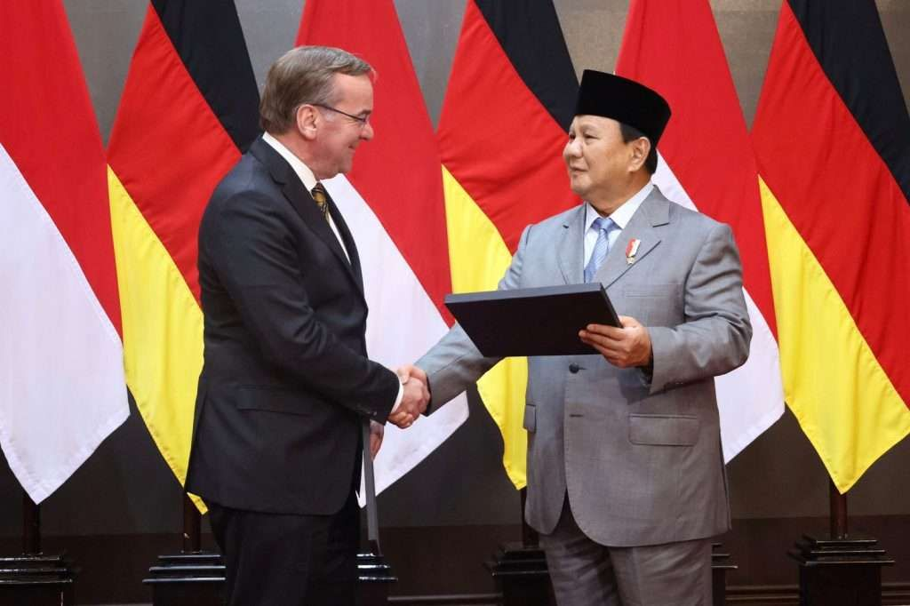
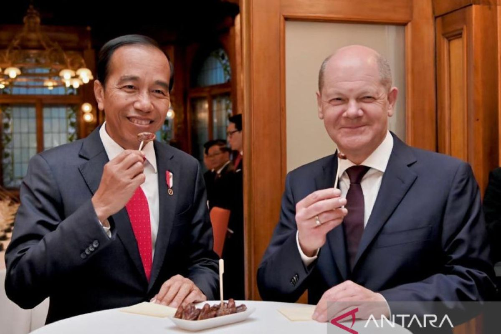
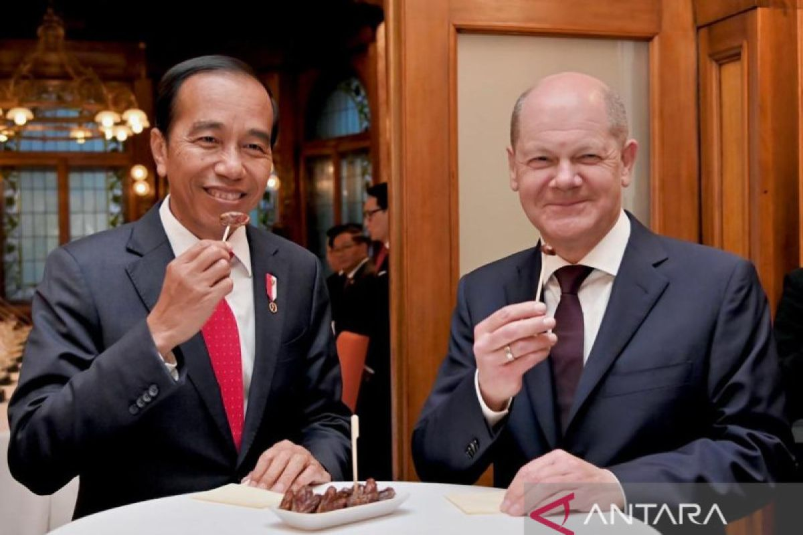

 

Kerjasama secara Bilateral antara Indonesia dengan negara yang mewujudkan tujuan ke-9 pada SDGs adalah Jerman. Tujuan ke-9 SDGs adalah Infrastruktur, Industri, dan Inovasi, telah membawa dampak yang besar bagi negara. Kerjasama secara Bilateral antara Indonesia dengan negara yang mewujudkan tujuan ke-9 pada SDGs adalah Jerman. Tujuan ke-9 SDGs adalah Infrastruktur, Industri, dan Inovasi, telah membawa dampak yang besar bagi negara. Bentuk kerjasama antar Indonesia dengan Jerman akan melakukan industrialisasi secara lebih efisien, infrastruktur yang kuat dan berkualitas, serta mendorong dan memicu pada inovasi.
Jerman dapat memberikan bantuan bagi Indonesia dalam bidang infrastruktur dengan melaksanakan nya melalui Kreditanstalt für Wiederaufbau (KfW). Yang merupakan Development Bank dari Jerman, mendanai projek infrastruktur transportasi di Indonesia. Jerman memberikan dukungan dalam mengembangkan sistem transportasi massal perkotaan di Semarang dan Surabaya. Dalam hal ini, Jerman memberikan pendanaan untuk proyek yang bertujuan mengurangi emisi karbon, yang telah menjadi masalah utama dalam sektor transportasi di Indonesia.
Sistem transportasi yang baru ini, yang dikenal sebagai Bus Rapid Transit (BRT), akan dioperasikan menggunakan armada bus listrik besar dan bus listrik menengah. Penggunaan bus listrik ini diharapkan dapat mengurangi penggunaan bahan bakar fosil yang sekaligus akan mengurangi tingkat polusi udara yang dihasilkan oleh kendaraan bermotor konvensional. Di Semarang, rencana ini mencakup pengoperasian bus listrik pada 35 trayek, sementara di Surabaya, rencananya akan ada 94 trayek yang dilayani oleh bus listrik.
Dukungan Jerman melalui KfW Development Bank tidak hanya berupa pendanaan. Namun juga keahlian mereka dalam hal mengelola transportasi ramah lingkungan yang merupakan hal baru di Indonesia. Selain itu, proyek ini juga merupakan bagian dari upaya Indonesia untuk mencapai tujuan pembangunan berkelanjutan (SDGs), khususnya terkait dengan pengurangan emisi karbon dan peningkatan kualitas udara di kota-kota besar.
Dalam proses industrialisasi, Jerman mendukung pengembangan kawasan industri di Indonesia. Yang berperan besar dengan mengutamakan teknologi canggih dan ramah lingkungan. Kerjasama bilateral ini, yang difasilitasi oleh EKONID (German-Indonesian Chamber of Industry and Commerce) yang berfokus pada peningkatan efisiensi produksi dan mengurangi ketergantungan pada tenaga kerja manual.
Teknologi yang dibawa dari Jerman dapat mengelola sumber daya secara lebih berkelanjutan, mengurangi emisi karbon, dan pada gilirannya meningkatkan kualitas hidup masyarakat Indonesia. Melalui forum bisnis, dan pelatihan, EKONID dapat menjadi mendorong Indonesia dalam transfer teknologi dan pengetahuan yang sekaligus dapat memperkuat sektor manufaktur Indonesia.
Sebagai organisasi yang memainkan peran penting dalam diplomasi ekonomi, EKONID fokus pada menciptakan saluran bagi perusahaan-perusahaan Jerman untuk berinvestasi dan beroperasi di Indonesia. EKONID tidak hanya mendorong aliran investasi modal, namun juga transfer teknologi dan keahlian industri yang dapat meningkatkan daya saing sektor manufaktur Indonesia secara global. Program ini tidak hanya menguntungkan bagi Jerman, namun juga mendorong daya saing domestik di Indonesia. Serta memperkuat posisi Indonesia sebagai pusat industri yang penting di kawasan Asia Tenggara.Melalui pendekatan yang terstruktur dan berkelanjutan, EKONID terus bekerja untuk memperluas jaringan bisnis antara Indonesia dan Jerman.
Kerjasama antar Indonesia dan Jerman secara Bilateral juga mendukung inovasi, terutama dalam teknologi dan industri. Melalui Kerja Sama dalam Program German-Indonesian Innovation Cooperation (GIIC), terjadinya pendorong dari Jerman bagi Indonesia dalam pengembangan dan transfer teknologi yang meningkatkan inovasi ada industri di Indonesia. Kerjasama ini berfokus pada kolaborasi antara pemerintah, perusahaaan, dan institusi pendidikan yang mendorong pertukaran menguntungkan bagi Indonesia dan Jerman. Dengan program ini dapat meningkatkan inovasi, mendorong pertukaran ilmu pengetahun, peluang bisnis yang luas, yang semua saling menguntungkan.